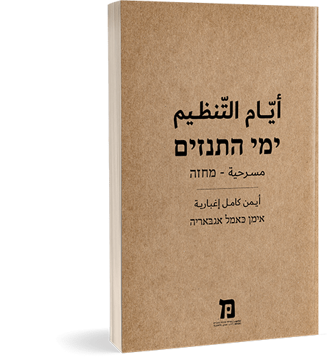
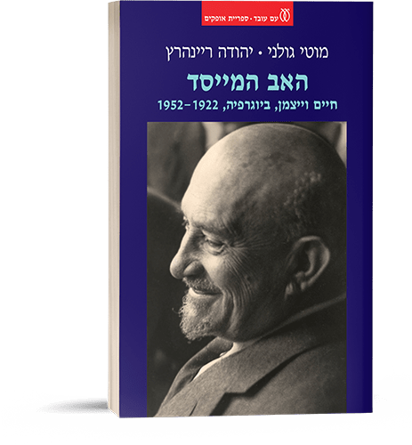

לאחרונה התברכנו ביבול נאה של ספרים שנכתבו על-ידי חברינו בסגל קרן מנדל:
הכוכבים לא רימו – פרי קריאתו המחדשת של פרופ' אריאל הירשפלד בשירתו של אלתרמן, שהתכנסה לספר שכתב יחד עם דן מירון;
השיבה לאנדלוס, פרי מסעו של ד"ר יובל עברי; המחזה ימי התנזים פרי עטו של ד"ר אימן אגבאריה;
תלמידי האתמול ותלמידי המחר – שלושה גלים של רפורמות בעולם החינוך, פרי מחקרו של פרופ' עמי וולנסקי; והאב המייסד – חיים וייצמן, ביוגרפיה, 1952-1922, מאת פרופ' יהודה ריינהרץ ופרופ' מוטי גולני.

הכוכבים לא רימו
מאת דן מירון ואריאל הירשפלד
הוצאת עם עובד
פרופ' אריאל הירשפלד
לעיון בתוכן העניינים ובמבוא >>

השיבה לאנדלוס
מאת יובל עברי
הוצאת מאגנס
ד"ר יובל עברי
לעיון בתוכן העניינים ובמבוא >>
לצפייה ביובל עברי משוחח על הספר באתר אוניברסיטת אוקספורד (אנגלית) >>

ימי התנזים
מחזה מאת אימן אגבאריה
הוצאת מכתוב של מכון ון-ליר
המחזה מספר על אישה ושני גברים הקשורים ביניהם בדרכים שונות ומסובכות: בקשרי משפחה, באהבה נכזבת, בעסקת אדמה משותפת, ובעיקר כמייסדים של מפלגת התנזים – כמה עשורים מוקדם יותר. הזיכרונות שלהם מימי פעילותם במפלגה מעוררים געגוע לעולם פשוט יותר, לכאורה. ככל שהזיכרונות עולים ונשזרים במציאות העכשווית, אנו נוכחים במתח הקיים בין שלושת החברים, הנובע ממה שהם זוכרים ומהמשמעות שיש לזיכרונות אלו ביחס לחלומותיהם ולתפקיד שכל אחד מהם מצפה ומצופה למלא בחייהם של האחרים. ד"ר אימן אגבאריה לא מניח לדמויות שיצר לשקוע במתיקות של הזיכרון המשותף ו"הפשוט". זיכרון כזה שנתלים בו, אינו יכול להיות קרקע פורייה להצמחת מציאות חדשה שתתקן את הקלקול שנוצר במהלך השנים שעברו אצל כל אחת מהדמויות, ובקרב החברה הפלסטינית כולה. "מי יכול לצלם את הלב שלך, את הזיכרון שלך ואת החלומות שלך"? מתריס יונס, מי שהיה המנהיג הנערץ של התנזים בעיר, כלפי מוסא, חברו ומעריצו משכבר, השקוע עמוק בתוך התככים הפוליטיים ומשחקי הכוח של מערכת הבחירות שהוא מוביל לראשות העירייה. המציאות הפלסטינית המסובכת דורשת התבוננות אחרת במציאות, כי כמו שאומר יונס: "עכשיו המצב שונה. העניינים התבלבלו – האמת עם השקר, הבגידה עם הלאומיות, האמונה עם הכפירה. אני כבר לא יודע כלום. אני כבר לא מכיר אתכם וגם לא את עצמי" (עמ' 27).
לקריאת המחזה בעברית ובערבית >>

שלושה גלים של רפורמות בעולם החינוך
מאת עמי וולנסקי
הוצאת שוקן
פרופ' עמי וולנסקי מציע לראות את הפער האינהרנטי שבין הציפיות ממערכות החינוך בישראל ובעולם לבין היכולת להגשימן, כהסבר לחיפוש מתמיד אחר שינויים במתודות חינוכיות. קריאה כזו היא בראש וראשונה קריאה שאיננה שופטת את המצב שגורם לפערים בין ציפיות למציאות שלעולם לא ניתן לחזותה במלואה מראש, וגם לא מתייאשת ממנו. בסקירה שפרופ' וולנסקי עורך הוא מבקש להאיר את התפיסות שעמדו ברקע הרפורמות השונות ולשאול – האומנם שיקולי הדעת של העוסקים בתכנון הרפורמות והחלתן על מערכת החינוך, משקפים תפיסות אלו? התשובה לכך תסביר את הצלחתן או כישלונן של הרפורמות השונות. לדוגמה, בתיאור הרקע לגל הרפורמות השלישי, הנוכחי, שעניינו למידה משמעותית, פרופ' וולנסקי מתייחס לסימביוזה בין עולם הצעירים לבין הטכנולוגיה במערכת החינוך ולמאמצים הרבים שנעשים מאז שנות השבעים [והיום יותר מתמיד], לקדם אותה (עמ' 142-137, בכרך ב').
לצפייה בכנס של אוניברסיטת תל אביב לרגל הוצאת הספר >>

האב המייסד – חיים וייצמן, ביוגרפיה, 1952-1922
מאת מוטי גולני ויהודה ריינהרץ
הוצאת עם עובד
הרצל חזה את מדינת ישראל; ואין עוררין על כך. היה לה למדינה גם אב מייסד – חיים וייצמן; אבל שמו נשכח, והכתר הזה הונח על ראשו של אחר – דוד בן־גוריון. אלמלא היה חיים וייצמן, ייתכן שהרצל היה נזכר רק כעיתונאי ומחזאי, ובן־גוריון לא היה הופך כלל ל"בן־גוריון". וייצמן, שהגשים את חזון ישראל למציאות, היה איש של סתירות: בעל כריזמה מהפנטת אך ביטחון עצמי נמוך; משוחח נפלא אך נואם חלש; מנוכר ליהדות מזרח אירופה אך מוכן לתת את נפשו למענה; איש של אנשים ושל נשים אך תמיד, לטוב ולרע, בן זוגה של ורה; היפוכונדר, גם ידוע חולי; בריטי במלוא הכרתו וציוני ללא פשרות; ובעיקר מי שהמדינה אשר עליה חלם קמה בארץ שהוא התקשה לחיות בה. וייצמן הראה שהמעשה היעיל ביותר למען המפעל הציוני צריך להיעשות בלונדון או בניו יורק, לא בירושלים; אחרי שהקריב וייצמן את הקריירה המדעית שלו, את משפחתו ואת בריאותו למען העניין האחד שאין בלתו, הוא בא למדינת ישראל בגופו, ספק אם גם בנפשו. הזיכרון הקיבוצי הישראלי לא מחל לו ומיצב אותו כנשיא ראשון אך חסר אונים. הנה הוא כאן לפנינו, בספר הזה, במלוא מורכבותו האנושית.לקריאת פתח הדבר באתר e-vrit >>
{kind=link}